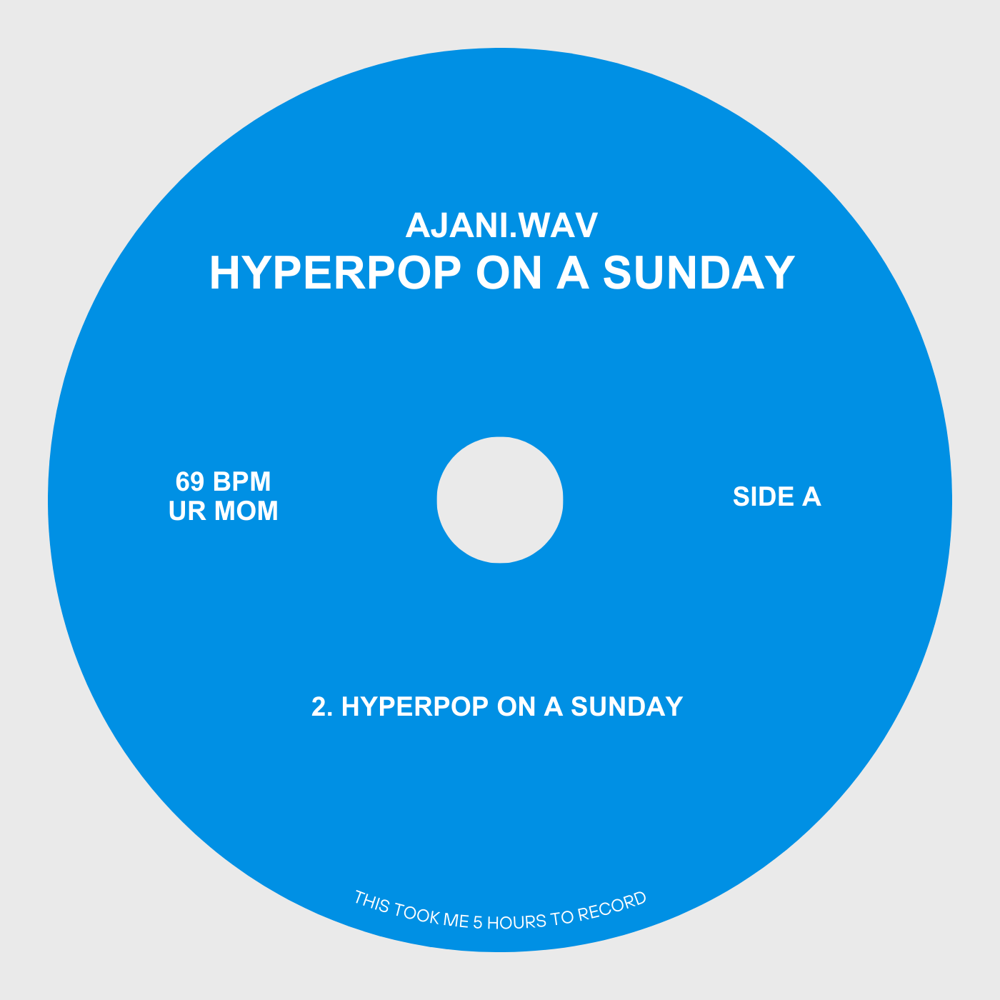

EPK
Born and raised in Seattle, AJANI's passion for music stems from a young age.
He continues to find his sound everyday influenced by hip-hop, house, and global club sounds.
His vision for every performance is to make any venue feel like a house party, where the music
is complementary to the audience's energy.
In hopes of stepping his foot into the music scene in Seattle, AJANI is currently open to booking shows
and collaborations. If you're interested in getting in contact click here. and
to see any upcoming shows, click here.
MUSIC
HYPERPOP ON A SUNDAY
AJANI.WAV